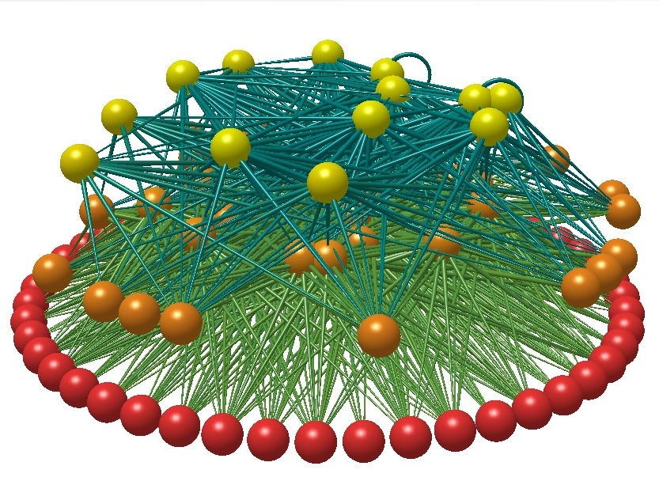

Alaina Stockdill
About Me
CV
Research
Teaching
Contact
Modeling Community Dynamics in the Rocky Intertidal
Research
Food Webs

Thermal Performance
Tidal Dynamics
Using trophic network models to understand the change in population abundacnes over time.
Incorporating the role of temperature into trophic network models via theorhetical thermal performance curves.
Understand the role of tidal fluctuations in altering intertidal community dynamics and the role that temperature plays in these systems.